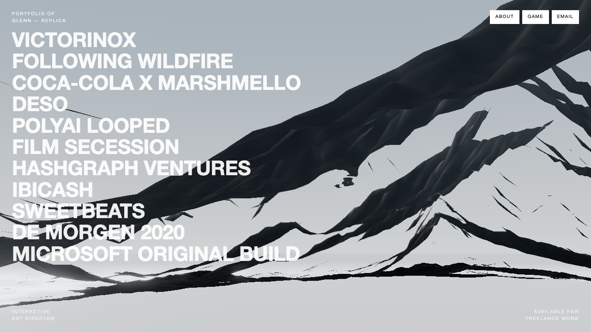
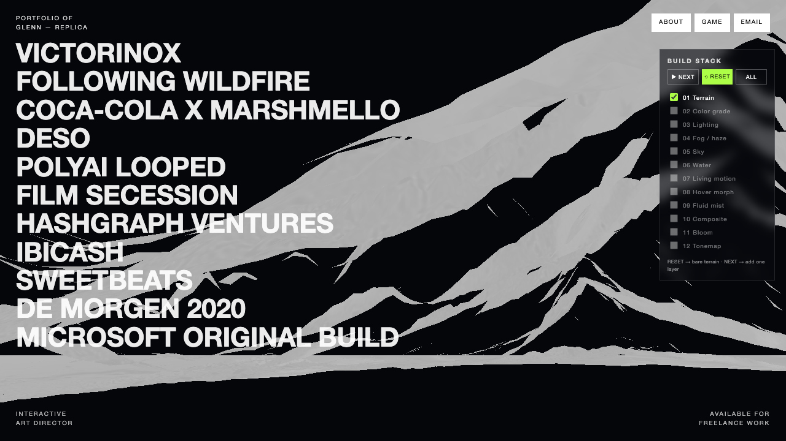
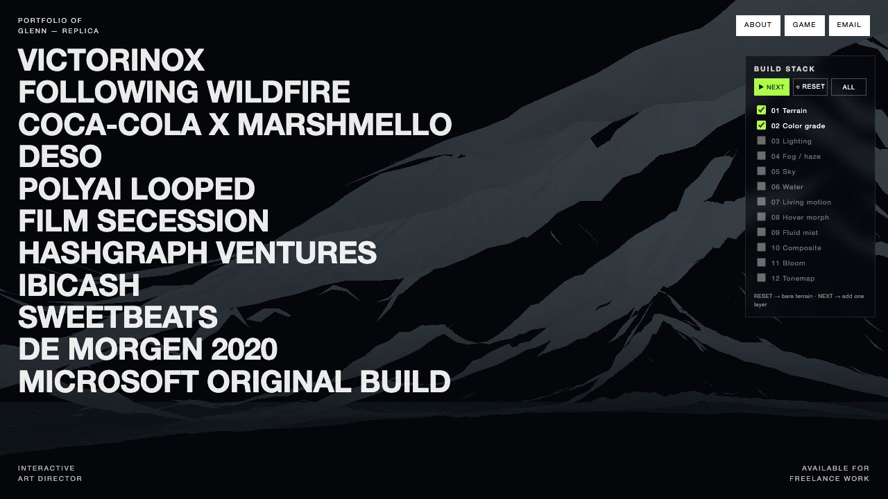
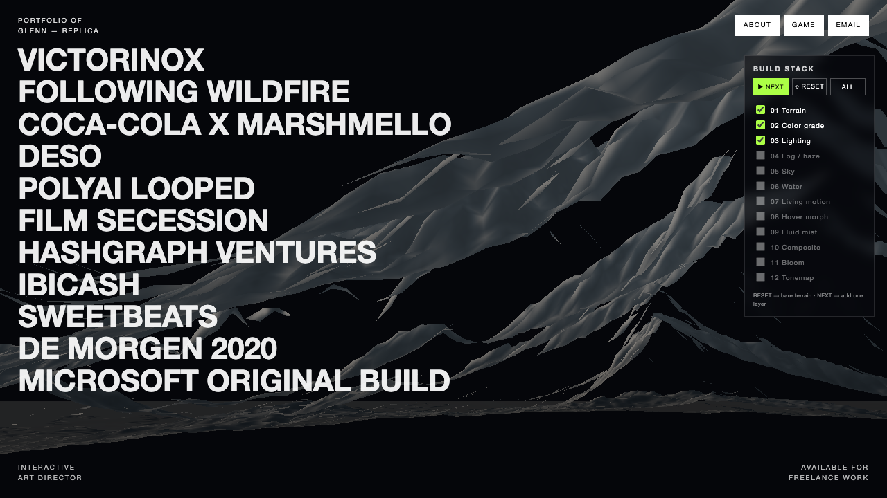
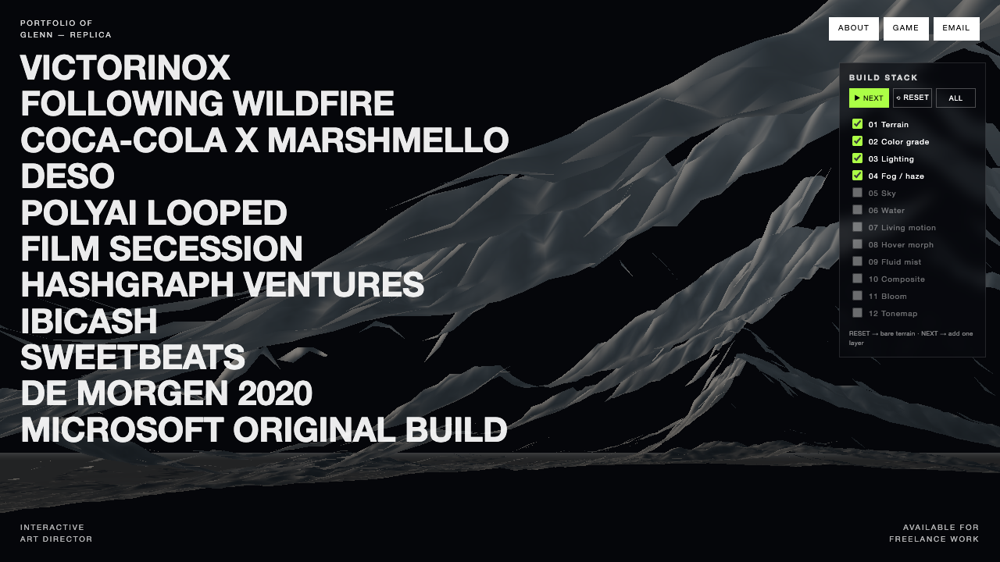
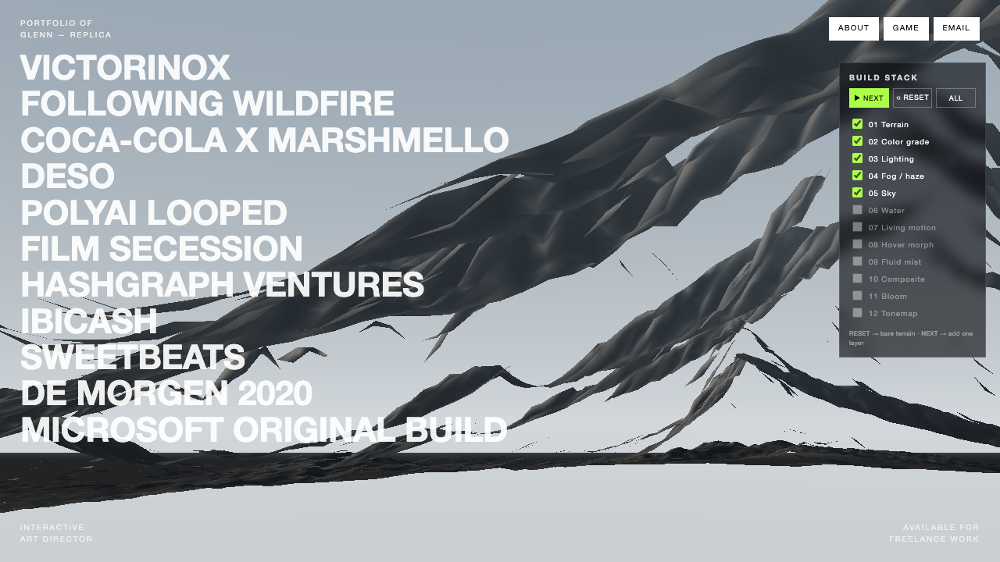
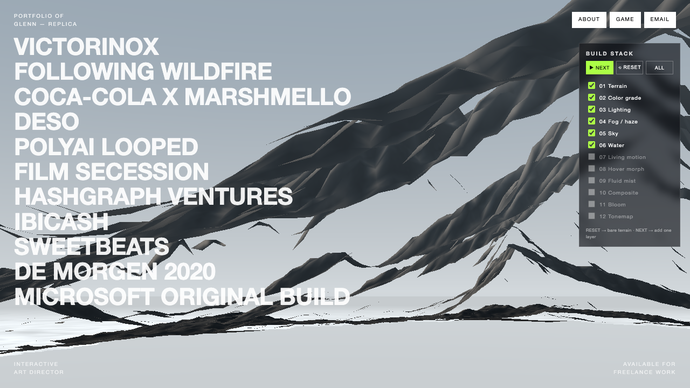
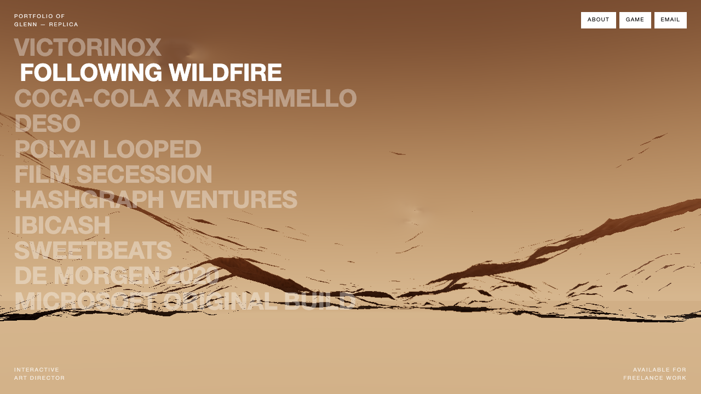
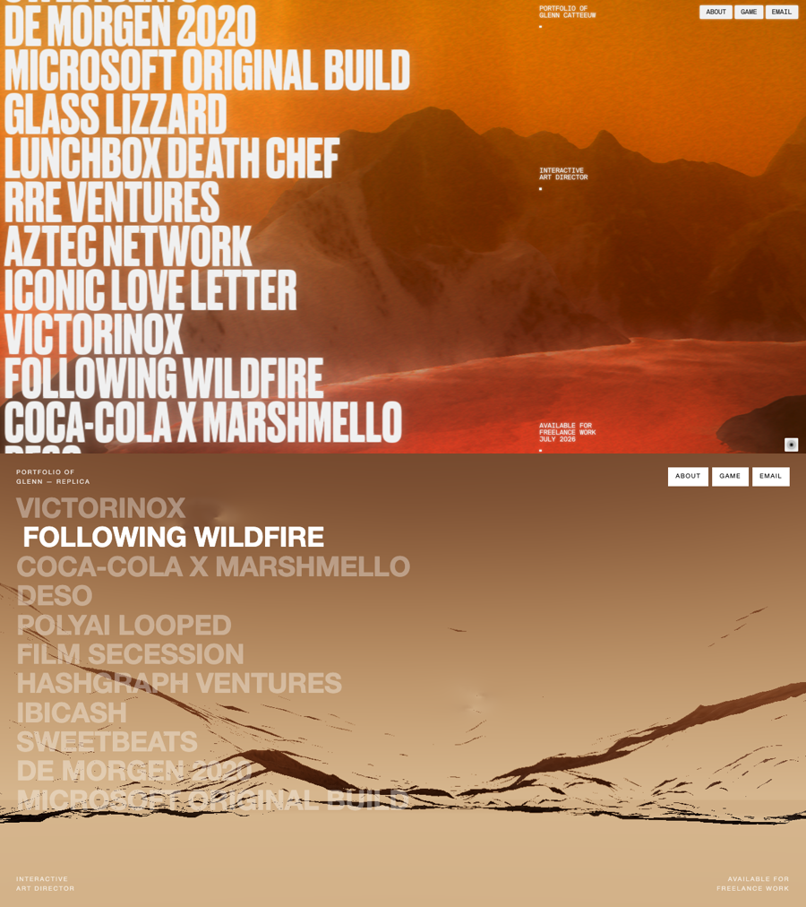

이 배경은 사진도 동영상도 아닙니다. 컴퓨터가 매 순간(초당 60번) 수백만 개의 점을 직접 계산해 그리는 실시간 3D예요. 그 과정을 12개의 얇은 층으로 쪼개서, 한 겹씩 어떻게 쌓이는지 보여드립니다.
화면은 점(픽셀) 200만 개로 이뤄져 있어요. 컴퓨터의 그래픽 칩(GPU)은 이 200만 개를 거의 동시에 계산하도록 만들어진 특수 부품입니다.
각 픽셀마다 "너는 무슨 색이 될래?"를 정하는 작은 프로그램이 도는데, 이걸 셰이더(shader)라고 합니다. 이 발표의 거의 모든 마법은 셰이더 안에서 일어나요.

// 우리가 복제한 최종 결과 — 이걸 12겹으로 분해합니다void main() { // 픽셀 1개마다 실행, 200만번 동시에 gl_FragColor = 색깔; // "나는 이 색이야" }
핵심 발상: 텍스처(이미지)는 그림이 아니라 "숫자표"다. 흑백 이미지의 밝기를 "높이"로 해석합니다. 흰색=높음, 검정=낮음.
잘게 쪼갠 평평한 판의 각 점을, 그 위치의 이미지 밝기만큼 위로 밀어올리면 → 산맥이 됩니다.

// 색·조명 끄고 본 '날것의 지형' — 형태만float 높이 = texture(높이맵, 위치).r; // 이미지 밝기 0~1 점.z += 높이 * 108.0; // 그만큼 위로
이제 산이 회색 덩어리니까 색을 입힙니다. 색은 사진에서 그대로 가져오지 않아요. 그러면 알록달록 부자연스럽거든요.
대신 높이에 따라 두 색 사이를 부드럽게 섞습니다 — 낮은 계곡은 어둡게, 높은 능선은 밝게.

// 높이 기반 색 적용 — 아직 납작함(조명 전)색 = mix(계곡색, 능선색, 높이); // 높이로 섞기
지금까지는 높이로 색만 칠해서 납작했어요. 진짜 산처럼 보이게 하는 비밀이 이겁니다.
각 지점이 어느 방향을 향하는지(법선)를 계산하고, 햇빛 방향과 비교합니다. 햇빛을 마주 본 면은 밝게, 반대 면은 어둡게.

// 조명 ON — 갑자기 진짜 바위산이 됨float 밝기 = dot(면방향, 햇빛방향); // 두 방향이 일치할수록 1(밝음), 반대면 0(그림자) 색 = 색 * (0.5 + 0.5 * 밝기);
실제로 멀리 있는 산은 공기층 때문에 흐릿하고 옅게 보입니다. 이걸 흉내 내요.
카메라에서 멀어질수록 그 픽셀의 색을 안개색 쪽으로 섞습니다. 가까운 산은 또렷, 먼 산은 하늘로 녹아듦.
이 한 가지가 장면 전체의 "몽환적·공기감"을 책임집니다. 안개가 없으면 그냥 딱딱한 3D 모델처럼 보여요.

// 먼 능선이 헤이즈로 사라지며 깊이감 생김float 거리 = 카메라에서_이_점까지; float 안개량 = smoothstep(560.0, 1450.0, 거리); 색 = mix(색, 안개색, 안개량); // 멀수록 안개색
장면 전체를 감싸는 거대한 공(球) 안쪽에 하늘색 그라데이션을 칠합니다. 카메라는 그 공 안에 있죠.
위(천정)는 진한 하늘색, 지평선 근처는 밝은 헤이즈 — 그래서 산이 밝은 지평선을 배경으로 실루엣이 됩니다.
안개색과 지평선 하늘색을 같게 맞춰서, 산이 하늘로 자연스럽게 녹아들게 했습니다.

// 하늘 추가 — 산이 하늘을 배경으로 떠오름float 위쪽정도 = 보는방향.y; // -1(아래)~+1(위) 하늘색 = mix(지평선색, 천정색, 위쪽정도);
물 평면을 일정 높이에 깔되, 그 아래 산의 높이를 읽어서 산보다 낮은 곳에만 물이 보이게 합니다. 그래서 해안선이 산을 따라 구불구불해져요(딱딱한 직선이 아니라).

// 물 추가 — 계곡에 물, 봉우리는 섬처럼 솟음float 수심 = 물높이 - 지형높이; if (수심 < 0.0) discard; // 산이 더 높음 → 물 안그림(땅) 거품 = (수심이 얕을수록 ↑); // 해안선 거품
07 미세 움직임 — 시간에 따라 흐르는 노이즈를 아주 살짝 더해 표면이 천천히 숨 쉬듯 일렁이게.
08 모핑 — 산은 여러 높이맵을 미리 준비해두고, 글씨에 마우스를 올리면 두 높이맵 사이를 천천히 섞습니다. 그러면 봉우리들이 새 위치로 기어가며 다른 산이 됩니다.

// 글씨 호버 → 산·색 동시에 다른 프로젝트로높이 = mix(산A높이, 산B높이, t); // t를 0→1로 천천히 올리면(GSAP) 봉우리가 이동
가장 정교한 부분. 진짜 물·연기의 물리 방정식을 GPU로 매 프레임 풉니다.
// "이 잉크는 방금 전에 어디서 흘러왔지?"를 거꾸로 추적 vec2 출발점 = 현재위치 - 속도 * 시간; 새_잉크색 = texture(염료장, 출발점);
마지막으로 완성한 그림 전체에 사진 보정 같은 마무리를 입힙니다.
실제로 우리가 "왜 이렇게 하얗게 나오지?" 문제를 겪은 게 바로 이 톤보정이 빠져서였습니다.
밝은부분 = 색에서 일정 밝기 이상만; 번짐 = 흐리게(밝은부분); // 발광 최종 = 톤매핑(색 + 번짐); // 흰색 폭발 방지
마법은 없었습니다. 전부 "숫자를 매 프레임 GPU가 계산"한 결과예요.
왼쪽 위 BUILD STACK 패널에서 RESET → NEXT를 누르면 이 12겹을 실제로 한 겹씩 켜볼 수 있습니다.

// 위: 원본 사이트 / 아래: 우리 복제본